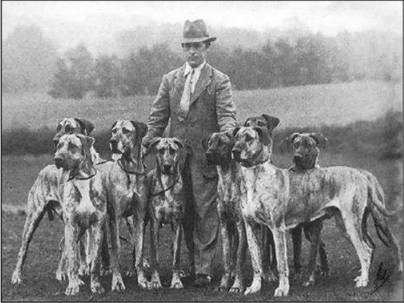
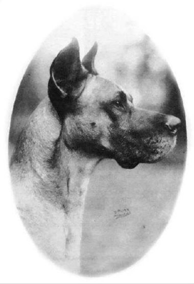
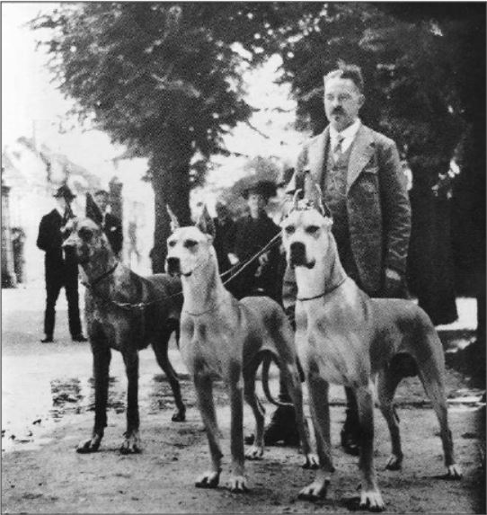
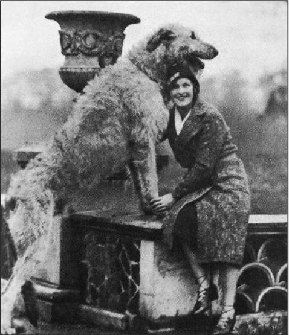

Как, вероятно, знают постоянные читатели, в прошлом году, после того
как Марк получил интересное предложение о работе, мы переехали с морского
побережья, чтобы быть ближе к Лондону. Должна признаться, что сначала я была не
в восторге от переезда, и найти дом, который можно было бы снять для четырех
собак, оказалось невероятно сложно.
Как, вероятно, знают постоянные читатели, в прошлом году, после того
как Марк получил интересное предложение о работе, мы переехали с морского
побережья, чтобы быть ближе к Лондону. Должна признаться, что сначала я была не
в восторге от переезда, и найти дом, который можно было бы снять для четырех
собак, оказалось невероятно сложно.
В конце концов, мы наткнулись на ветхое бунгало с большим садом. Оно было очень старым (а мобильная связь была просто шокирующей!), но хозяева были не против того, чтобы мы взяли собак, и (поскольку они всегда на первом месте) мы его сняли. Наш новый дом находился в графстве Суррей, в двух шагах от пространств c открытыми вересковыми пустошами, лесистыми холмами и живописными деревнями - иногда трудно поверить, что мы находимся всего в 40 милях от столицы.
Суррей также пропитан историей, и не только обычной историей о королях и королевах, битвах и страшных убийствах; для нас, любителей породистых собак, важнее тот факт, что графство когда-то было домом для знаменитых заводчиков (имена которых до сих пор занимают видное место в истории собаководства всего мира) и некоторых очень значимых, новаторских питомников. Два из этих питомников, Ouborough и Send, будут мгновенно узнаваемы всеми, кто хоть мимолетно интересуется догами и (в случае с Ouborough) ирландскими волкодавами.
Наш нынешний дом в Хиндхеде находится недалеко от места, где когда-то располагались оба этих исторических заведения, и впоследствии я узнала историю о двух очень богатых миллионеров из Суррея - Джеймса В. Ранка и Гордона Стюарта, которые боролись (на протяжении 1920-х/30-х годов) за право обладания самым большим и влиятельным питомником породы немецкий дог в Великобритании, если не в мире. В течение многих лет эти гиганты монополизировали разведение и показ собак породы Great Dane. Я подумала, что это определенно история своего времени (наполненная оптимизмом, богатством, элегантностью и экстравагантностью эпохи), а также история, которая, я надеюсь, заинтересует вас.
Оба этих богатых (и очень конкурентных) человека попали под чары одной конкретной породы - "Аполлона всех пород" - дога, и были готовы потратить огромные состояния, чтобы привезти самое лучшее поголовье из Германии в Англию. Если вы подумаете (при всем нашем развитии технологий и путешествий), насколько сложным (и дорогим) может быть импорт собаки даже сегодня, представьте себе, каково это было до появления компьютеров, авиаперевозок и даже до повсеместного использования телефонов! Им также приходилось сталкиваться с очень длительным и дорогостоящим пребыванием в карантине.
Тем не менее, с 1921 по 1936 год г-н Ранк импортировал двадцать пять догов, а с 1926 по 1936 год мистер Стюарт импортировал пятьдесят пять собак!
Эти собаки содержались в роскошных условиях. Псарни в Сенде были спроектированы как швейцарские шале, а весь комплекс напоминал швейцарскую деревню. На пике своего развития в питомниках Сенда содержалось более пятисот догов (пяти окрасов). Для обслуживания питомников и земли было нанято двадцать пять человек, а также десять помощников, тридцать горничных и три дрессировщика. Пятьсот догов, очевидно, требовали немало корма!
Поэтому Гордон Стюарт основал собственную птицеферму, чтобы прокормить своих голодных гончих. В многочисленных огромных сараях содержались тысячи кур и голубей, яйца и птица составляли основную часть рациона сенд-догов.
Не отставая от них, доги из Ouborough содержались в столь же просторных помещениях на великолепном поместье площадью более 170 акров.
ДЖЕЙМС ВОАЗ РАНК
Джеймс родился в Халле в 1881 году, в семье йоркширского мельника. Он стал известным закупщиком пшеницы и со временем создал огромную бизнес-империю. Джеймс В. Ранк был братом более известного Дж. Артура Ранка, киномагната, который создал в Англии "Пайнвуд Студиос", чтобы соперничать с калифорнийским Голливудом.
Обширный комплекс питомника Ourbobough включал в себя кухню и офис, а собаки размещались в безупречно ухоженных индивидуальных клетках. Для перевозки собак на выставки по всей Великобритании использовался изготовленный на заказ фургон, в котором с комфортом могли разместиться шесть крупных собак.
ГОРДОН СТЮАРТ
Гордон Стюарт был также состоятельным бизнесменом. Он родился в 1885 году, в семье торговца чаем. В 1912 году он посетил Лондонскую автомобильную выставку, где случайно встретил молодого инженера по имени Уильям Моррис. Моррис показал ему макет предложенного им четырехцилиндрового автомобиля "Morris Oxford".
Гордон был впечатлен, заказал четыреста моделей и получил права на все свои автомобили, продаваемые в Лондоне. К 1923 году его годовой оборот составлял 1 миллион фунтов стерлингов, а выставочные залы располагались по всей столице.
ОБЩАЯ ЛЮБОВЬ
Приходилось читать в различных статьях, что Дж.В.Ранк и Гордон Стюарт терпеть не могли друг друга - трудно сказать, правда это или нет, однако две вещи совершенно очевидны: оба любили догов, и конкуренция между ними (в выведении лучших представителей пород) была очень сильной. Дж.В. Ранк начал в 1922 году, в основном с арлекинов, два из которых принадлежали ему: Ch. Etive Magpie и Ch. Marcus of Walsall. Вскоре арлекины были заброшены, и Рэнк сосредоточился на тигровых и палевых, произведя множество чемпионов, гордо носящих имя Ouborough.
Всего год спустя после начала разведения догов соседом мистер Стюарт также начал заниматься разведением, но в монументальных масштабах! Он тоже был поклонником арлекинов и владел потрясающей собакой Ch. Wulfram of Sendale.
БИЛЛ СИГГЕРС и Чемп. ЭЛЧ ЭДЛЕР из Оуборо
Невозможно писать об Ouborough и J.V. Rank, не упомянув харизматичного руководителя питомника Ouborough, легендарного Билла Сиггерса. Билл был рядом с Джей Ви с самого начала. Он был известен в Англии как лучший из хендлеров. Известный судья Гвен Бродли вспоминала, как видела его выступления на ринге, когда была еще совсем маленькой девочкой. "Он приходил с командой. Иногда шесть или семь догов или волкодавов, и казалось, что он держит их всех на шелковой нити. Ни один не сделал ни шагу в сторону, и казалось, что Билл даже не прикасается к ним. Это было похоже на балетный спектакль".
Но Билл был не просто хендлером/менеджером питомника. У него явно был глаз на хорошую собаку, и в первые годы существования Ouborough он был отправлен через всю Германию, чтобы купить самое лучшее поголовье.
В отличие от Гордона Стюарта, который, похоже, подходил к покупке своих догов скорее импульсивно, создание Ouborough было тщательно спланированной философией. Босс Билла, Дж.В. Ранк, подошел к делу так, как будто это была одна из его компаний. У Ранка была чековая книжка и полное доверие к суждениям Билла. Это была выигрышная комбинация. Во время одной из своих многочисленных поездок в Германию Билл познакомился с Карлом Фарбером и "королевской семьей" - Чемп. Боско и Дольфом v.d. Saalburg - легендарными именами для поклонников породы Great Dane.
Рольф из Ouborough был знаменитой собакой палевого окраса, купленной Биллом и импортированной в Англию в 1923 году. Он оказался основателем питомника, придав импульс развитию породы, которая после Первой мировой войны находилась в упадке. С участием Рольфа Было произведено более тридцати чемпионов Оуборо.
Особенно ярким событием стал 1931 год, когда мистер и миссис Ранк выставили на выставке в Вестминстере двух собак. Faun of Ouborough и Rhena v.d. Rheinschange (дети Дольфа) были проданы в Америку, где оба получили американские титулы и (надо полагать) внесли свой вклад в облик современного американского дога.
После Второй мировой войны г-н Ранк приобрел в Германии крупную и очень красивую собаку рыжего окраса, которую впоследствии назвали Гектор из Ouborough. У него интересная история: он служил талисманом королевского шотландского гвардейца и путешествовал с ним по Италии, Греции и Франции. Когда полк был расформирован, дог (не имевший никаких документов и просто записанный как "родословная неизвестна") был подарен мистеру Ранку, который, очевидно, заметил его качество (он, должно быть, происходил от кого-то из прославленных довоенных немецких собак). Ранк повязал его с Реликом из Ouborough. В результате родился Kalandus of Ouborough, а от вязки Kalandus с Ch. Raet of Ouborough родился один из лучших британских догов - Elch Edler of Ouborough. Питомник Ouborough, уже ставший обладателем большинства рекордов породы, достиг вершины своего успеха. В 1953 году он стал BIS на выставке Crufts. К сожалению, мистер Рэнк не увидел этого венчающего достижения, скончавшись в 1951 году.
Но Билл, его верный помощник на протяжении всех этих лет, имел честь вести эту невероятную собаку к блестящей победе, которая только может быть присуждена любой собаке и хендлеру.
СЕНСАЦИОННЫЕ "СААЛЬБУРГИ"
Саальбургских догов однажды описали как "величайшую вещь, которая когда-либо происходила с догами". Их хозяин, Карл Фарбер, владел прекрасной сукой - Фауной Монгунтия. От вязки с Чемп. Боско она произвела на свет Чемп. Дольфа Саальбурга. Дольф стал поистине великим племенным кобелем с чемпионским потомством по всему миру. О нем часто говорили как о "величайшем в мире чемпионе", и он оказал огромное влияние на всю породу догов.
Как и в Британии, богатые американские любители рыскали по Германии, чтобы купить самых лучших собак. Судьбоносным для истории американского дога стал импорт немецкой Чемп. Этфы из Саальбурга, выращенной Карлом Фарбером. Она была палевой дочерью Ch. Bosco v.d. Saalburg и происходила из того же разведения, от которого был получен легендарный Ch. Dolf. Она оказала огромное влияние на современных американских догов - это влияние можно увидеть, взглянув на победителя в номинации "Лучший представитель породы" на Вестминстер шоу - Чемп. 2015 Хони Голд фон Оверкап, девятнадцать линий которого восходят непосредственно к Чемп. Этфе. В начале 1930-х годов Харкнесс Эдвардс из питомника "Walnut" привел шесть импортных собак к американским титулам.
На знаменитой фотографии "Сендская сотня" изображены 100 датчан, которых специально обучали уму и послушанию. Некоторые из этих собак (в том числе и Мидас из Сенда) были использованы в фильме, снятом национальной ассоциацией "Безопасность превыше всего". Alert Today, Alive Tomorrow", фильме о безопасности дорожного движения для детей.
В 1930 году Гордон Стюарт подарил английскому клубу догов знаменитые "Золотые вазы Сенда", которые присуждались лучшим собакам в каждой группе. Каждая ваза сделана из 9-каратного золота и имеет около 17 дюймов в высоту.
Хотя Гордон также импортировал множество собак из Германии и был самым яростным соперником мистера Ранка, у него не было настоящего интереса к миру шоу. Он занимался этим только для того, чтобы доказать, что его собаки были на равных с собаками Ранка. Утверждается, что золотые вазы Сенда были формой борьбы за победу над Ранком и питомником Ouborough.
Так кто же победил в борьбе?
Мистер Рэнк взял хороший старт в 1922 году, а в следующем году Ouborough начал выходить на лидирующие позиции.
Мистер Стюарт выиграл свой первый клубный титул в 1926 году с Brenda of Send.
В 1927 году 15 клубных титулов достались Ouborough, а в следующем году Сенд произвел Чемп. Гермиону из Сенда. В 1929 году Сенд получил 10 клубных титулов, а Оуборо - 11.
В 1930 году Сенд вышел в лидеры, выиграв 18 титулов против 4 у Обро.
Представьте себе, каково было быть сторонним наблюдателем на ринге в начале 1930-х годов, ведь острое соперничество между этими гигантами продолжалось и в 1931 году, когда результаты показали, что у Оброу 9 клубных титула, а у Сенда 14. В 1932 году Обборо вышел в лидеры с 12 клубными титулами против 4 у Сенда. Оуборо начал стремительно уходить в отрыв. В 1933 году он набрал 15 клубных титула, а Сенд получил только 3. В следующем году Обборо получил 20 клубных титула против 6 у Сенда.
Начиная с 1936 года, имя "Сенд" внезапно исчезает из списка победителей, тогда как Оуборо продолжает доминировать среди догов в течение многих лет.
Ouborough, безусловно, является победителем в борьбе догов, но оба этих питомника (и их богатые владельцы) внесли огромный вклад в развитие прекрасной породы.
Lee Connor специально для Canine Chronicle. 2019